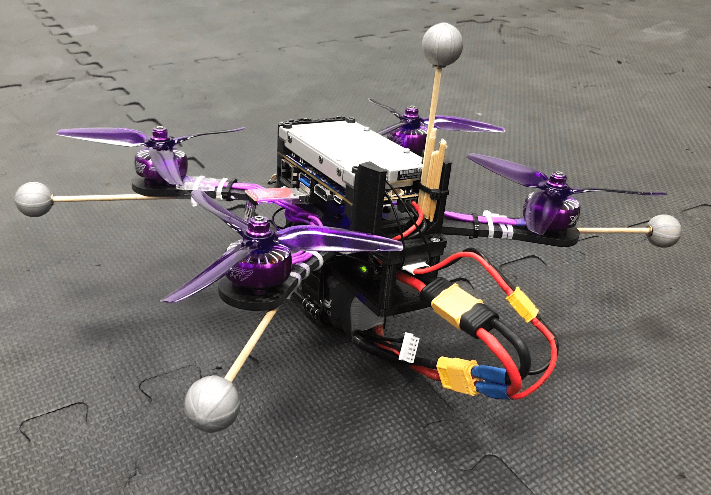
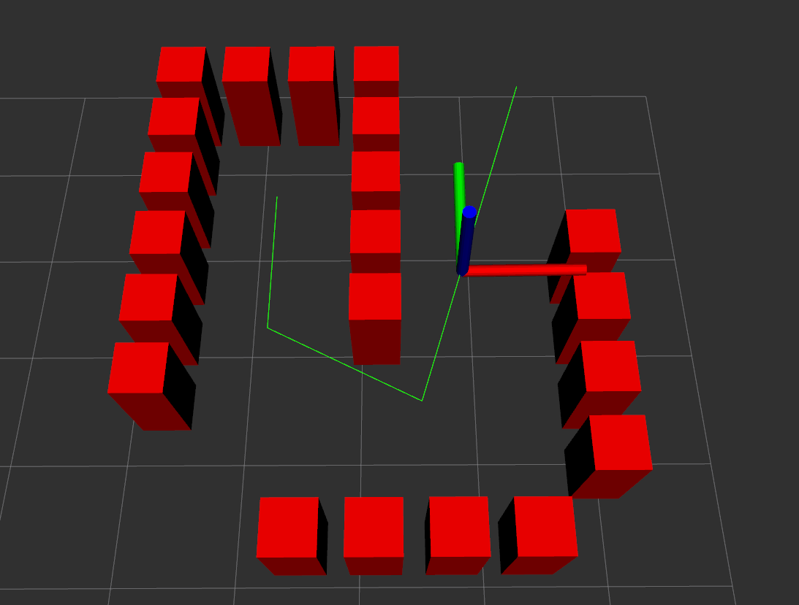

Real-Time Motion Planning with Q-Learning Controller
This project presents an algorithm for real-time kinodynamic motion planning for aerial vehicles with unknown dynamics operating in crowded, dynamic environments. A random-sampling space-filling tree (RRT^X) handles collision-free path planning and rapid replanning, while a continuous-time Q-learning controller based on an actor-critic structure learns to track the planned path online without requiring a model of the vehicle dynamics.
The Q-learning controller uses an integral reinforcement learning actor-critic architecture to approximate the Hamilton-Jacobi-Bellman equation, eliminating the need for a known dynamics model. A Mellinger controller converts the learned force commands into attitude and thrust references.
The full system is implemented as a modular ROS2 flight stack and runs entirely onboard a custom 700g quadrotor with a Jetson TX2 computer. It was validated in both Gazebo simulation and real hardware flight experiments navigating obstacle-filled environments, with Q-learning parameters converging online at approximately 125 Hz.

